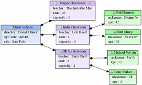
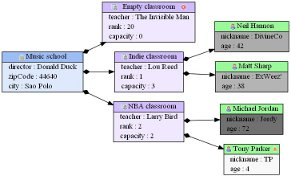

The pre-defined figure types (ClassFigures, AttributeFigures, ReferenceFigures, RichAttributeFigures and RichReferenceFigures) allows to statically adjust several appearance properties like colors, font style, and so on.
Once these properties have been defined, it is applied on every figure instance. For example, on the school sample, if the background color of the student's ClassFigure has been defined, all the students have the same color on the diagram. In some cases, on may need several apperance properties to become dynamic.
For example, in the school sample, we may want to build dynamically the body background color of the students with their age. Let's imagine we want to use gray colors indexed on the age of the student. We will have to :
|  |  |
Most of the figure's appearance properties are overridable. Here is a complete list of the overridable properties :
| Figure type | Overridable properties |
|---|---|
| ClassFigure | labelStyle, headerBackgroundColor, bodyBackgroundColor |
| AttributeFigure | labelStyle |
| RichAttributeFigure | labelStyle |
| ReferenceFigure | targetArrowType, sourceArrowType, customTargetArrow, customSourceArrow, color, style, minimumEdgeLength |
| RichReferenceFigure | targetArrowType, sourceArrowType, customTargetArrow, customSourceArrow, color, style, minimumEdgeLength, sourceLabelStyle, standardLabelStyle, targetLabelStyle, labelDistance, labelAngle |
The DynamicPropertyOverrider accepts the following properties :
| Category | Name | Description | Default literal |
|---|---|---|---|
| - | enabled | A boolean indicating if the dynamic property overrider is enabled or not | true |
| overridingExpression | The OCL expression to be used to retrieve the overriding property value | ||
| propertyToOverride | The figure's appearance property to override |